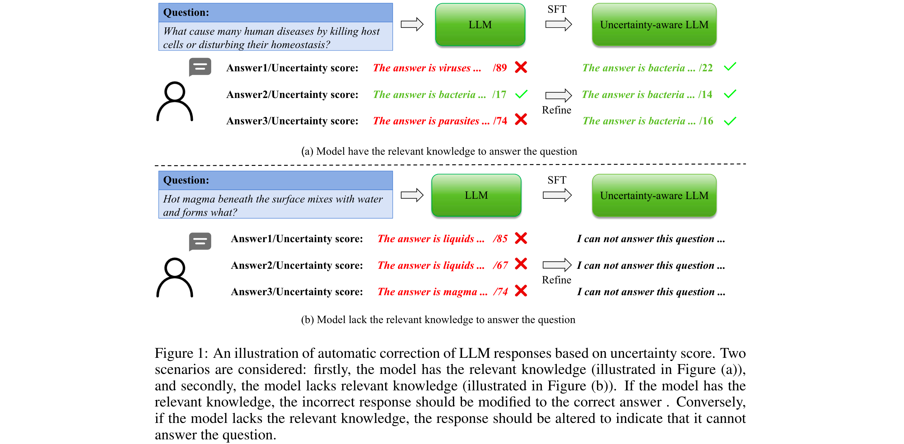
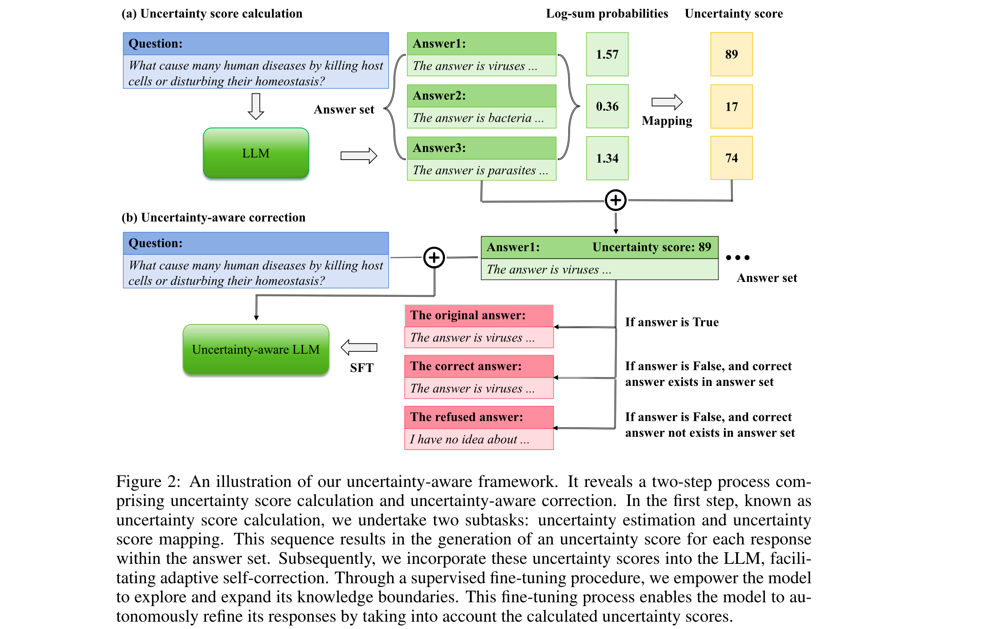
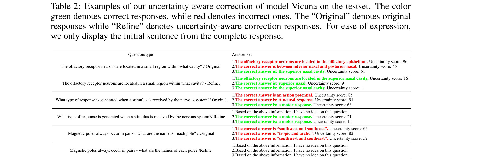

Improving the Reliability of Large Language Models by Leveraging Uncertainty-Aware In-Context Learning
[Link]
Motivation
- "Uncertainty is lower when the model’s response is correct compared to when it is incorrect.”
- Setting a strict uncertainty threshold to discern the correctness of the model’s response seems intuitive, but it presents a formidable challenge in practice.
Method

- For each question in the calibration dataset, the model generates multiple responses, each labeled as “correct” or “incorrect”, with corresponding uncertainty calculations.
- When all of the model’s responses for a particular question are classified as “incorrect”, the uncertainty-aware model should refrain from providing an answer.
- Conversely, if at least one of the model’s responses aligns with the correct answer, the uncertainty-aware model should select the correct response as its final answer.
Overview

- The uncertainty-aware framework is divided into two steps, namely uncertainty score calculation and uncertainty-aware correction.
- Utilize the logit output values of the model’s response to obtain the uncertainty of each generated token.
- Aggregate these token-level uncertainties to derive the uncertainty of each generated output.
- To explore the knowledge boundary of the model and investigate the beam search space within the answer set, make the model responds to the same question multiple times.
- After obtaining the uncertainty score for each response, we supervised fine-tuning the model for self-correction. This fine-tuning process empowers the model to autonomously adjust its responses based on the calculated uncertainty scores.
Uncertainty Score Calculation
Uncertainty Score Estimation Method
- Single-inference Based Uncertainty Estimation.
- Minimum of Token Probabilities.
- Average of Token Probabilities.
- Normalized Product of Token Probabilities.
- Log-sum of Token Probabilities.
- Multi-inference Based Uncertainty Estimation. (Not adapt)
Uncertainty Score Mapping
- Due to the highly uneven distribution of uncertainty in the training dataset, the direct inclusion of uncertainty introduces a great deal of noise and confusion.
- In the experiment, we investigate the impact of various classification granularities, namely deciles, hundreds, and thousands, which correspond to uncertainty scores ranging from 1 to 10, 1 to 100, and 1 to 1000, respectively.
- This same mapping strategy is applied during the inference stage, with uncertainty scores computed based on the intervals established during the training phase.
Uncertainty-Aware Correction
Uncertainty-Aware Fine-tuning
- Rather than directly injecting correct answers from the calibration dataset into the model, we employ it to assess the correctness of the model’s responses.
- In cases where all of the model’s responses for a particular question are categorized as “incorrect,” we interpret this as an indication that the model lacks the requisite knowledge to respond to the question
- When at least one of the model’s responses aligns with the correct answer, we infer that the model possesses the requisite knowledge to address the question.
Test-time Correction
- The model respond to each question once and calculate its corresponding uncertainty score.
- Then resend the problem, the response and the uncertainty score to the model for self-correction.
Experiment
Tow Proposed Metrics
- Accuracy (“refused questions” and “answered questions.”)
- AUROC.
Datasets
Models
Findings
- Analysis of different uncertainty estimation methods - Log-sum is optimal.
- Analysis of mean uncertainty score and AUROC - Underscores the presence of a correlation between the mean uncertainty of responses and overall accuracy.

Case Study
- The uncertainty scores associated with correct responses do not consistently fall below those of incorrect responses.
- During testing, responses with high uncertainty scores may be rejected, even if the model has the necessary knowledge to generate an answer to improve reliability.
- The model consistently modifies its behavior to reject responses when it encounters questions that fall beyond its knowledge domain.
Discussion
- Is there any better uncertainty estimation methods?
- How to deal with over-confidence problem?: The model’s resilience to variations in question content may serve as a potential indicator to judge whether a given response is a over-confidence question or not.
- Data uncertainty and model uncertainty: Unknown questions contribute to data uncertainty.